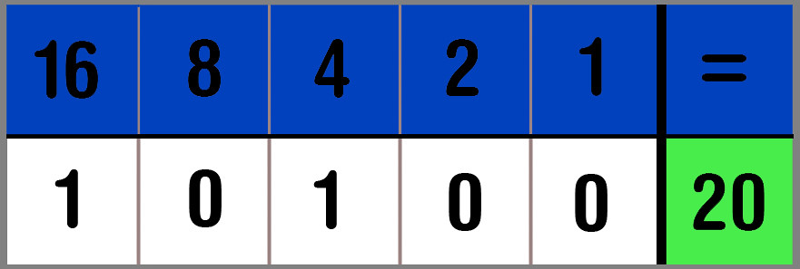

We zijn gewend om de getallen 0 tot 9 te gebruiken, dat heet het tientallige stelsel. Maar computers gebruiken een andere getallenstelsel. Computers gebruiken namelijk het binair stelsel dat alleen met de getallen 0 en 1 werkt. Binair stelsel werkt met elektrische signalen die aan en uit kunnen staan. De getallen 0 en 1 worden bits genoemd. Bij het binair stelsel staat de getal 0 voor uit en de 1 staat voor aan.

Hoe werkt het binair stelsel?
Om het binaire stelsel makkelijker te kunnen uitleggen moet ik gelijk met een voorbeeld beginnen. Stel je voor dat je het getal 5 hebt in het binair stelsel dat is dan 101. Maar hoe kom je eigenlijk aan getal 5 met die rare code? Je begint al eerst aan de rechterkant. In dit geval staat het getal 1 helemaal rechts, wat betekent dat je als eerste 20 hebt en dat is 1. Bij het tweede getal heb je het getal 0, wat betekent dat je 21 hebt en dat is 2. Als laatste heb je weer 1 het getal 1, wat hier staat voor 22 en dat is 4. Nu moet je kijken hoeveel je van elke machgetal had om bij elkaar op te tellen:
Als je dat bij elkaar optelt, krijg je: 4 + 0 + 1 = 5. En zo kom je bij getal 5. Ik raad je nog aan om het filmpje hieronder te gaan bekijken, want daarna heb ik een leuk spelletje voor je klaargezet om je kennis te testen!!!
De ASCII-tabel
Deze tabel is belangrijk voor communicatie tussen mensen en computers, want zonder deze tabel zouden computers niet begrijpen hoe ze met een tekst moeten gaan werken.